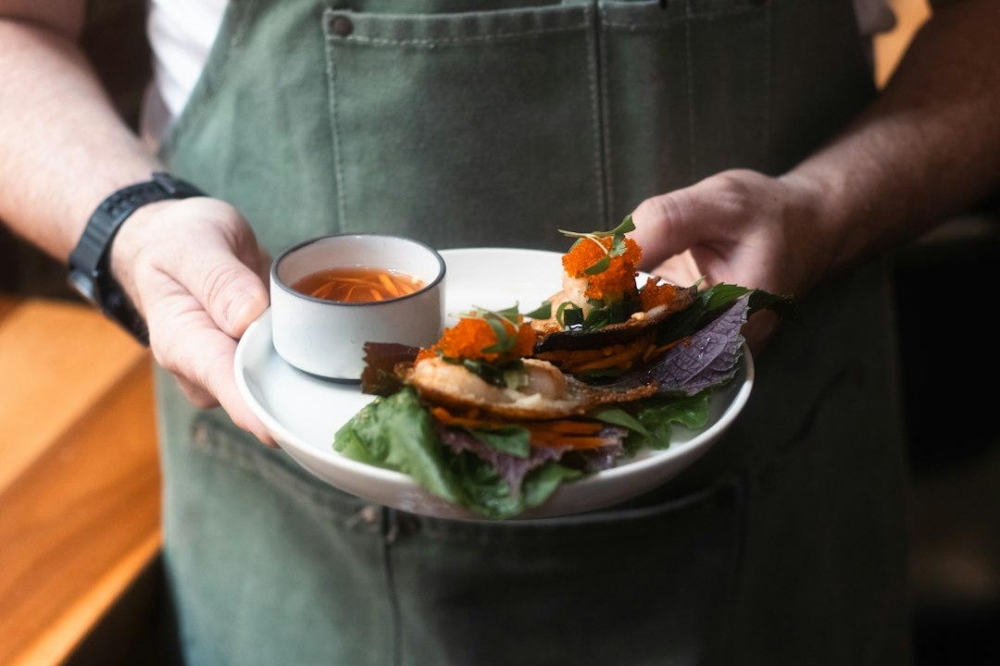

For locals and visitors comparing restaurants sydney options, the useful starting point is a directory that separates cuisine, suburb, review signals and enquiry paths instead of treating every meal as the same search.
Restaurants Sydney Explained
Best Sydney Restaurants presents Sydney dining as a set of searchable categories and locations, which is useful when the occasion is clear but the venue is not. A casual family meal, a seafood booking, a steakhouse dinner, a vegetarian table and a fine dining reservation need different checks. The page gives readers a starting map rather than asking them to scroll through unrelated venues.
The strongest use is comparison. The source page says diners can read reviews, view photos, compare services and pricing, and get quotes for free. Treat those signals as prompts, not as a substitute for confirming details with the venue. Menus, private dining availability and booking conditions can change, so the final decision should still be checked directly before money or guests are committed.
- Start with the occasion: family meal, date night, group booking, private function or cuisine-specific search.
- Use category pages: Chinese, Indian, Italian, Japanese, Mediterranean, Modern Australian, seafood, steak and grill, Thai, vegetarian and vegan are listed paths.
- Check location fit: suburb pages help when travel time, parking, public transport or a nearby event shapes the booking.
- Compare review volume and rating together: a rating is more useful when read beside the number of reviews shown on the profile.
Choosing by Occasion Instead of Hype
A dining search works better when the reader names the constraint first. A quick dinner near Haymarket is not the same job as a private dining enquiry in the city, and a family booking in The Rocks may need different checks from a late meal in Newtown. The source page supports that decision path by combining cuisine categories with location browsing.
For a low-pressure meal, the casual and family category is a sensible first filter. For a higher-stakes booking, fine dining, steak and grill, seafood or Modern Australian categories may produce a shorter list to compare. For a group with dietary needs, vegetarian and vegan listings should be checked early rather than treated as a final compromise.
Cuisine labels also need context. Thai, Indian, Chinese, Japanese, Italian and Mediterranean searches can each return venues with different service styles, booking rules and group suitability. Before contacting a venue, note the meal type, guest count, preferred suburb and whether the booking needs private dining or function information. Those inputs make the enquiry clearer and reduce back-and-forth.
Local Search Without Suburb Stuffing
The location list is most useful when it answers a real planning question. Parramatta, Surry Hills, Newtown, Woolloomooloo, Pyrmont, Barangaroo, Potts Point, Darlinghurst, The Rocks and Haymarket appear on the source page because diners often combine cuisine with place. The suburb should affect the decision, not decorate the search.
Use place as a practical filter. Barangaroo or Darling Harbour can suit waterside or city-centre plans. Haymarket can be relevant when the meal is near theatres, transport or a city visit. Surry Hills, Potts Point, Darlinghurst and Newtown are useful filters when the group already knows the part of Sydney they want to stay in. Parramatta matters when western Sydney access is more important than a harbour-side setting.
For another crawlable editorial view of the same dining topic, see this Sydney restaurant category guide. It should be read as a supporting guide, while booking details still come from the venue profile and the venue contact path.
What to Check Before Contacting a Venue
The source page describes a three-step flow: search by provider type or location, compare reviews, photos, services and pricing, then contact the venue by call, email or quote request. That flow is strongest when the diner arrives with a short brief.
- Decide whether the booking is for a meal, private dining, a function or a quote request.
- Choose the cuisine category before comparing individual profiles.
- Shortlist by location only where travel and timing affect attendance.
- Read the profile for review count, rating, category and suburb.
- Confirm menu, booking availability and any function detail directly with the venue.
Do not rely on one signal. A venue with strong review volume may still be the wrong fit for a quiet dinner. A convenient suburb may not solve dietary requirements. A category match may still need a direct check for group size, seating style or current menu information.
Who This Applies To
This guide is for diners who want a structured shortlist before they contact a restaurant. It suits visitors planning around a Sydney location, locals comparing a new suburb, office organisers checking private dining or function possibilities, and families trying to avoid a venue that is wrong for the group.
It is also useful for restaurant operators reading the public directory format. The page includes an add-your-business path and says businesses can claim a free listing or upgrade to Pro for priority placement, photos and lead tracking. That is a business listing context, not a dining recommendation in itself.
Readers looking for one critic's ranked list may find the format too practical. The better fit is someone who wants to compare categories, reviews, photos, services, pricing cues and enquiry options in one place before making contact.
- Set the booking brief. Write down cuisine, suburb, guest count and whether the meal is casual, fine dining, family focused or function related.
- Filter the category. Use the relevant category page before comparing individual venue profiles.
- Compare signals. Read rating, review count, photos, service information and pricing cues together rather than in isolation.
- Contact the venue. Use the listed contact path to confirm menu, booking availability and any private dining or function requirement.
| Decision point | Use the directory for | Confirm directly |
|---|---|---|
| Cuisine first | Filter by one of the listed categories, such as Thai, seafood or vegetarian and vegan | Current menu, dietary detail and table availability |
| Location first | Start with listed suburbs such as Surry Hills, Barangaroo, Parramatta or Haymarket | Travel time, nearby plans and booking time |
| Function or group meal | Look for profiles that mention private dining, functions or contact options | Guest count, room setup and any quote detail |
| Review-led search | Compare rating beside the number of reviews shown | Whether recent venue details still match the occasion |
This guide covers how to use a Sydney restaurant directory to compare categories, locations, reviews and enquiry paths before contacting a venue.